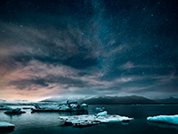
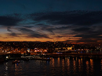
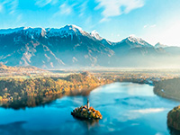
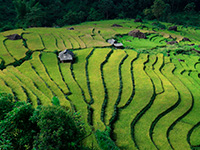
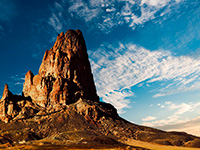

Sobre mí
Soy un fotógrafo paisajista apasionado por capturar la belleza natural del mundo con una mirada honesta y profunda. A través de mi lente, busco transformar paisajes en emociones, lugares en historias y momentos en imágenes que inviten a detenerse y contemplar. La naturaleza siempre ha sido mi mayor fuente de inspiración. Me mueven la luz de un amanecer en la montaña, el silencio de un bosque antiguo, la inmensidad del mar. Cada salida con la cámara es una búsqueda: de equilibrio, de conexión y de verdad.
Con el tiempo, he aprendido que la fotografía de paisajes no es solo una cuestión de técnica, sino también de paciencia, sensibilidad y respeto por el entorno. No se trata solo de lo que se ve, sino de lo que se siente estando ahí. Mi trabajo refleja mi forma de ver el mundo: con asombro, con gratitud y con la intención de compartir esa belleza con los demás. A través de mis fotografías, quiero invitarte a viajar, a respirar más lento y a reconectar con lo esencial.
Actualmente resido en Bogotá/Colombia, pero siempre estoy buscando nuevos horizontes que explorar con mi cámara
Algunos de mis trabajos
Fotografía de eventos (Bodas, Cumpleaños, etc.)




